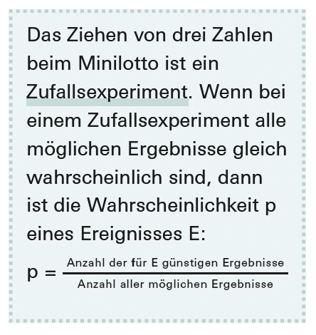
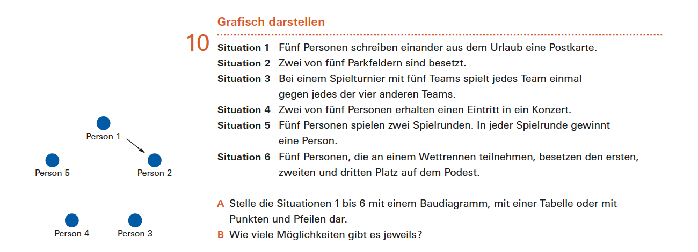

Bezug zur SchulpraxisAbzählen, ohne zu fragen

Quelle: Mathbuch 1 (überarbeitete Ausgabe), Lernumgebung L, Aufgabe 1, S. 66
Die Anteilsregel ist einfach zu handhaben und wird in der Sekundarstufe I ständig gebraucht. Ihre Voraussetzung dagegen – dass die Ergebnisse gleich wahrscheinlich sein müssen – wird dort nie ausgesprochen. Am Anfang steht dieses Spiel:
Zwei Würfel, die Differenz der Augenzahlen, zwei Spielfiguren: Rot rückt bei $0$, $1$, $2$ vor, Blau bei $3$, $4$, $5$. Ob das Spiel fair ist, wird zunächst durch Spielen und Strichlisten beantwortet. Gerechnet wird noch nicht.

Quelle: mathbu.ch 2, LU 21, Randspalte S. 71
Gerechnet wird von Anfang an
Sobald gerechnet wird, geschieht es mit der Anteilsregel – und zwar ohne Ausnahme. Im Arbeitsheft zur selben Aufgabe sind die Wahrscheinlichkeiten der Differenzen zu bestimmen, wenige Seiten später die des Münzwurfs, dann die Gewinnchance beim Rubbellos, zuletzt die Wahrscheinlichkeit, dass ein umgedrehter Dominostein passt. Jedes Mal wird gezählt, was zutrifft, und durch die Anzahl aller Fälle geteilt.
Kombinatorische Mittel braucht es dafür zunächst nicht. Die Zahlen sind klein genug, dass sich alle Fälle aufschreiben lassen. Erst in den Aufgaben 5 und 6 derselben Lernumgebung kommen Zählstrategien dazu. Aufgabe 6 stellt beides nebeneinander: Zuerst ist zu bestimmen, wie viele verschiedene Dominosteine möglich sind, danach wird nach der Wahrscheinlichkeit gefragt, dass ein umgedrehter Stein passt. Im Themenbuch bleiben die beiden Teile allerdings getrennt – für die Wahrscheinlichkeit sind acht Steine abgebildet, die gezählte Gesamtzahl wird nicht gebraucht. Im Arbeitsheft schliesst sich die Lücke: Dort liegen zwei, drei oder vier Steine offen, die übrigen $26$, $25$ oder $24$ verdeckt – und dieser Nenner ergibt sich nur aus der zuvor bestimmten Gesamtzahl.
Benannt wird die Regel nirgends. In der Vorgängerausgabe stand sie ausgeschrieben, und zwar samt ihrer Bedingung:
Das ist kein Verlust an Substanz, solange die Bedingung erfüllt ist. Die Frage ist, wer dafür sorgt.

Quelle: Mathbuch 1 (überarbeitete Ausgabe), Arbeitsheft, Aufgabe 1.2, S. 14

Quelle: Mathbuch 1 (überarbeitete Ausgabe), Lernumgebung L, Aufgabe 2, S. 67
Wer die Ergebnisse auseinanderhält
Damit die Anteilsregel trägt, muss eine Ergebnismenge vorliegen, auf der die Ergebnisse gleich wahrscheinlich sind. Nicht jede Ergebnismenge leistet das. Das Urnenbeispiel in Abschnitt 3.1 hat gezeigt, woran es in der Regel liegt: Werden gleich aussehende Gegenstände zu einem Ergebnis zusammengefasst, so stehen hinter den Ergebnissen verschieden viele Fälle. Wer sie dagegen auseinanderhält, erhält eine Menge, auf der gezählt werden darf.
Diese eine Bewegung – Gegenstände unterscheidbar machen – kommt in der Lernumgebung dreimal vor. Einmal ist sie bereits vollzogen, einmal wird sie begründet, einmal wird sie verlangt.
Vollzogen. Zurück zum Differenzenspiel. Zwei Würfel werden gleichzeitig geworfen. Wer die Augenzahlen als ungeordnete Paare notiert, erhält $21$ Ergebnisse – und die sind nicht gleich wahrscheinlich, denn hinter einem Doppel steht ein Fall, hinter jedem gemischten Paar zwei. Für die Differenzen ergäbe sich die Folge $6$, $5$, $4$, $3$, $2$, $1$ statt der richtigen $6$, $10$, $8$, $6$, $4$, $2$.
Im Arbeitsheft stellt sich die Frage gar nicht erst:
Die Tabelle trägt oben «2. Würfel»\ und links «1. Würfel». Damit sind die beiden Würfel benannt und die $36$ Felder gleich wahrscheinlich. Ausgezählt wird anschliessend, wie oft jede Differenz vorkommt – eine Frage nach einem Ereignis, hinter dem verschieden viele Ergebnisse stehen.
Erfunden wird dabei nichts: Zwei Würfel sind zwei Gegenstände, und sie zu benennen ist erlaubt, auch wenn sie gleichzeitig fallen. Die Tabelle nimmt den Lernenden also keine Willkür ab, sondern eine Entscheidung – und zwar dieselbe, die im Urnenbeispiel die Nummerierung der Kugeln leistet.
Begründet. Eine Aufgabe später wird eine Münze zweimal nacheinander geworfen, und dort steht:
Halten Sie hier kurz inne. Teilaufgabe B5 fragt, weshalb es keinen Unterschied macht, ob eine Münze zweimal nacheinander oder ob zwei Münzen gleichzeitig geworfen werden. Was ist zu sagen, um diese Frage zu beantworten?
Antwort anzeigen
Zu sagen ist, dass zwei Münzen zwei Gegenstände sind. Ob man sie auseinanderhält, weil die eine vor der anderen fällt, oder weil die eine links und die andere rechts liegt, ändert an den vier gleich wahrscheinlichen Ausgängen nichts. Die Zeit ist nur eine Art, Gegenstände zu unterscheiden.
Folgenlos ist das nicht. Wer stattdessen die drei Ausgänge «zweimal Kopf», «zweimal Zahl»\ und «gemischt»\ nimmt, erhält für zwei verschiedene Seiten den Wert $\tfrac{1}{3}$ statt $\tfrac{1}{2}$ – und genau danach fragt Teilaufgabe B3, eine Zeile über B5.
Verlangt. Der dritte Fall kommt in der ganzen Lernumgebung genau einmal vor.

Quelle: Mathbuch 1 (überarbeitete Ausgabe), Lernumgebung L, Aufgabe 3, S. 68
Quelle: Mathbuch 1 (überarbeitete Ausgabe), Arbeitsheft, Aufgaben 3.1 bis 3.3, S. 18–19
Die Aufgabe, die es verlangt
Vier Rubbelfelder, drei Smileys, eine Niete aufgerubbelt werden drei Felder, gewonnen hat, wer drei Smileys aufdeckt. Zuerst wird geschätzt, dann werden hundert Lose in der Klasse aufgerubbelt, dann simuliert. Erst danach heisst es: Die Wahrscheinlichkeit lasse sich genau bestimmen, und verschiedene Möglichkeiten seien zu diskutieren.
Zum ersten Mal im Lehrgang soll eine Wahrscheinlichkeit exakt bestimmt werden, ohne dass die Ergebnismenge mitgeliefert wäre. Weder ist ein Baumdiagramm abgedruckt noch eine Tabelle vorbereitet.
Bei vier Feldern geht das gut. Wer den Baum mit Smiley und Niete beschriftet, erhält vier Pfade, und hinter jedem stehen gleich viele Fälle – die Niete kann an erster, zweiter oder dritter Stelle auftauchen oder verdeckt bleiben. Das Abzählen der Pfade liefert $\tfrac{1}{4}$, und das ist richtig.
Teilaufgabe C ändert eine einzige Zahl: fünf Felder, drei Smileys und zwei Nieten, drei aufrubbeln.
Halten Sie noch einmal inne. Was passiert mit dem eben erfolgreichen Vorgehen, wenn eine zweite Niete hinzukommt?
Antwort anzeigen
Nun sind die beiden Nieten untereinander nicht unterscheidbar. Der Baum mit Smiley und Niete hat sieben Pfade, und hinter ihnen stehen $12$, $12$, $12$, $6$, $6$, $6$ und $6$ Fälle. Pfadabzählen ergäbe $\tfrac{1}{7}$ richtig ist $\tfrac{1}{10}$.
Das Arbeitsheft baut dazu eine Reihe auf:
Zwei Felder mit einem Smiley und einer Niete drei Felder mit zwei Smileys und einer Niete vier Felder mit zwei Smileys und zwei Nieten. Dreimal dieselbe Aufforderung, ein passendes Baumdiagramm zu zeichnen und die Gewinnwahrscheinlichkeit zu bestimmen. In den ersten beiden Fällen trägt das Abzählen der Pfade, im dritten nicht: Dort ist $\tfrac{1}{6}$ richtig, das Pfadabzählen liefert $\tfrac{1}{4}$.
Ein Korrektiv ist immerhin eingebaut. Weil Aufgabe 3 das Schätzen, das Ausprobieren mit hundert Losen und die Simulation vor die exakte Bestimmung stellt, steht am Ende ein empirischer Wert neben dem gerechneten. Wer $\tfrac{1}{7}$ erhält, hat einen Vergleichswert, der ihm widerspricht. Dass die Abweichung bemerkt wird und dass ihr Grund zur Sprache kommt, geschieht allerdings nicht von selbst.
Fazit
Zwei Dinge sind zu tun, wenn eine Wahrscheinlichkeit bestimmt werden soll: modellieren und rechnen. Gerechnet wird in der Sekundarstufe I von Anfang an, und zwar mit derselben Regel wie hier. Modelliert wird nicht von Anfang an – und das ist gut so, denn eine Modellierung muss man erst mehrfach gesehen haben, bevor man sie selbst vornehmen kann.
Die Ergebnismenge steht deshalb meist schon fest, wenn eine Aufgabe beginnt. Und immer geht es dabei um dasselbe: darum, ob gleich aussehende Gegenstände auseinandergehalten werden. Beim Münzwurf und beim Domino stellt sich die Frage nicht, weil die Ausgänge von sich aus verschieden sind. Bei den beiden Würfeln stellt sie sich, und die Tabelle hat sie beantwortet, bevor jemand sie gelesen hat. In beiden Fällen bleibt die Bedingung der Anteilsregel unter der Oberfläche – einmal, weil es nichts zu entscheiden gab, einmal, weil schon entschieden war.
An einer Stelle bleibt sie es nicht. Beim Rubbellos wird die Modellierung verlangt, und sie kann misslingen in Teilaufgabe C misslingt sie sogar wahrscheinlich, weil das Vorgehen aus den Vorgängeraufgaben dort nicht mehr trägt. Die Aufgabe macht die Verhandlung darüber notwendig – ohne sie anzukündigen und ohne einen Begriff dafür anzubieten.
Damit ist es die Lehrperson, die sie führen muss. Und dafür braucht sie nicht mehr, aber auch nicht weniger als das, was dieses Kapitel behandelt: zu erkennen, an welcher Stelle über die Ergebnismenge entschieden wird, ob die Entscheidung schon getroffen wurde und was davon abhängt. Wer das sieht, kann die Stellen nutzen – die harmlose bei B5 ebenso wie die folgenreiche beim Los. Wer es nicht sieht, dem fallen sie nicht auf, weil ein sauber gezeichnetes Baumdiagramm nicht wie ein Fehler aussieht.